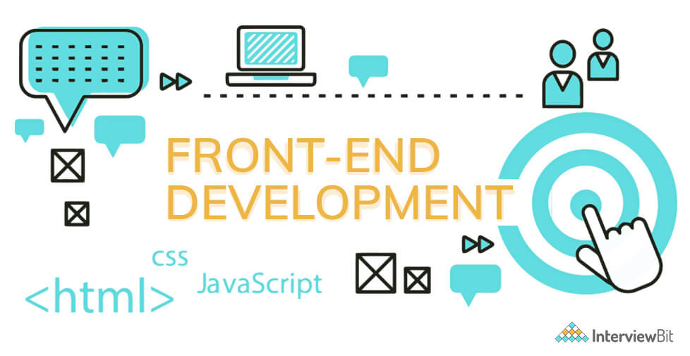

Front End

What is Front-End Development?
Have you ever thought of the process of websites? The buttons we click, the slides of
the images, the carousal, the loading symbols, navigations these are the examples of
front-end development which are nothing but the visualization of what the user can
see on the websites. Front-end views enable you to interact with the web and its
actions. To give that attractive looks, action and design are developed using the three
best front end technologies and the fundamental technologies are
"HTML"
Hypertext Markup Language
,
"CSS"
Cascading Style Sheet
,
"JS"
JavaScript.
HTML
HTML
HTML is the standard markup language for Web pages.
With HTML you can create your own Website.
HTML is easy to learn - You will enjoy it!
Know More
CSS
CSS
Cascading Style Sheets (CSS) is a stylesheet language used to describe the
presentation of a document written in HTML or XML (including XML dialects such as
SVG, MathML or XHTML). CSS describes how elements should be rendered on
screen, on paper, in speech, or on other media.
Know More
JAVASCRIPT
JAVASCRIPT
JavaScript is a scripting or programming language that allows you to implement
complex features on web pages — every time a web page does more than just sit
there and display static information for you to look at — displaying timely content
updates, interactive maps, animated 2D/3D graphics, scrolling video jukeboxes, etc.
— you can bet that JavaScript is probably involved. It is the third layer of the layer
cake of standard web technologies, two of which (HTML and CSS) we have covered
in much more detail in other parts of the Learning Area
Know More